In the early phase of the simulation
where 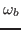 is the bounce angular frequency of particles in the trough of
the wave, the trapped particles effects can be neglected. This phase can be
considered as the linear phase where the linear Landau damping theory
(discussed later in this note) is valid. The bounce angular frequency of
particles in the trough of the wave is given by[1]
Using this, the condition (8) is written as
This condition reduces to
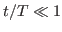 for the case plotted in Fig.
2, where we see that the total kinetic energy of the particles
increases monotonously with time during this period. From the data in Fig.
2, the temporal change rate of the total kinetic energy is
estimated as
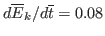. Next, I compare this
result with those given by the analytic formula (39) (given later
in this note), which is written
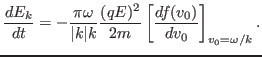
Using Eq. (7) and
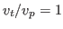, the above expression is written
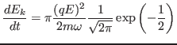
Multiplying by 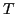 and then dividing by
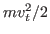, the above expression is
written
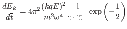
Using
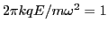, the above expression is written as
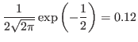
The result given by the analytic formula is slightly different from that of
the simulation (0.12 vs 0.08). Considering the various approximations used in
deriving the analytic formula, the two results can be considered to be in
agreement with each other.
yj
2016-01-26